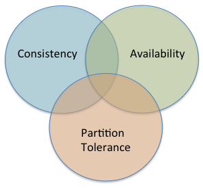
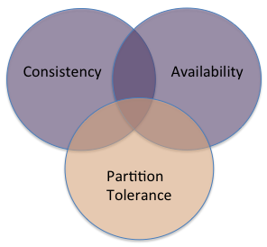
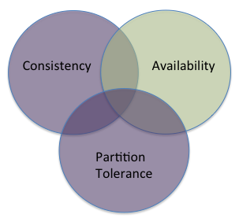

Week 8, Wednesday (March 5, 2014)
CAP categories
The Consistency, Availability, and Partition Tolerance regions:
 After Takada, Chapter 2
Many traditional database systems favour Consistency and Availability over partition tolerance (CA):

Any node in the system will always give the same answer, no matter what sequence of reads and writes the system has seen. But it cannot run at all if any node is partitioned. (This isn’t really “available” at all.)
Some systems offer Consistency and Partition Tolerance but give up availability (CP):

As with CA systems, any node that is available will give you the same answer, regardless of the sequence of reads and writes. If there is a network partition, the main body will continue (provided it is large enough to have a quorum), while the smaller part will not accept writes. The smaller part might run in read-only mode but will get increasingly out of date.
Finally, systems might offer Availability and Partition Tolerance but give up consistency (AP):

These systems will remain available, accepting reads and writes even in the case of network partitions. Their tradeoff is that different nodes might give different results to the same query.
Tradeoffs in the CAP space
Review of the first two diagrams in Distributed Algorithms in NoSQL Databases, whose HTML titles are “consistency-plot-3” and “consistency-catalog”. (GitHub garbles these two diagrams if I try to link to them directly, so I must use this indirect link.)